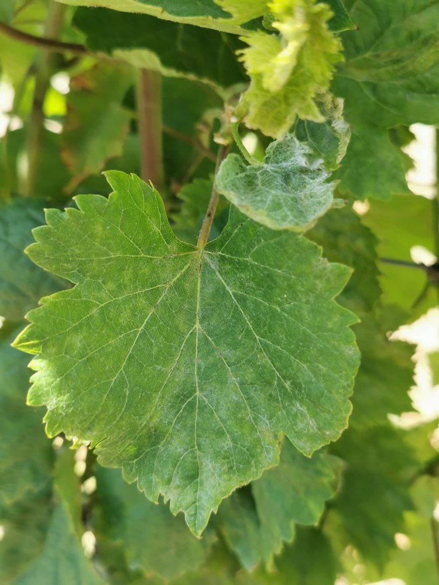
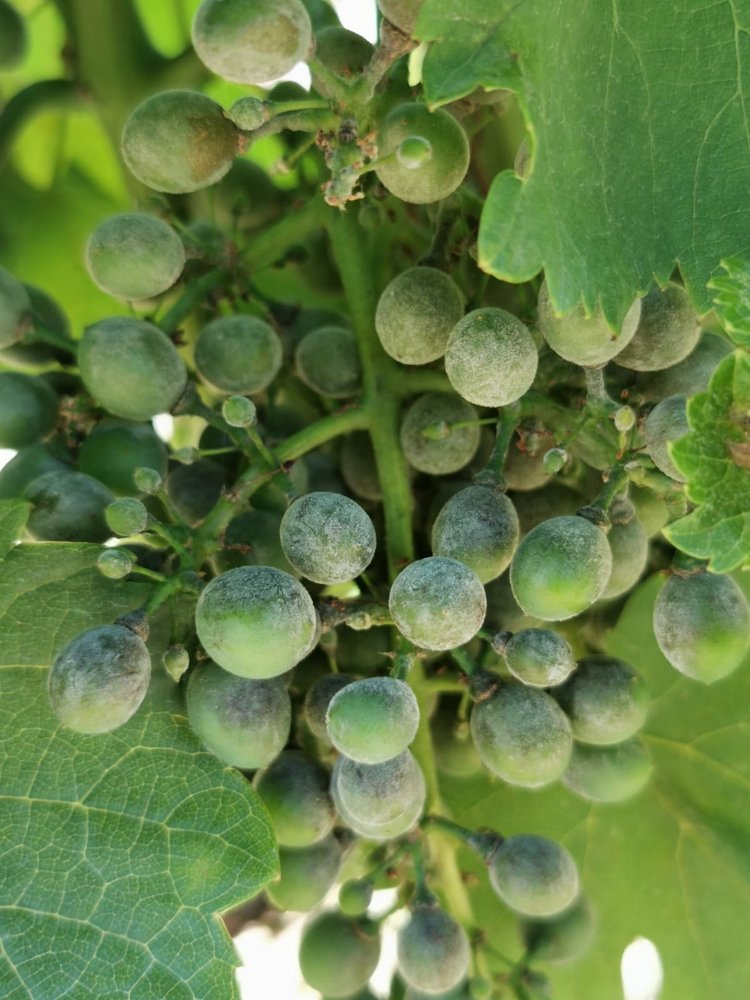
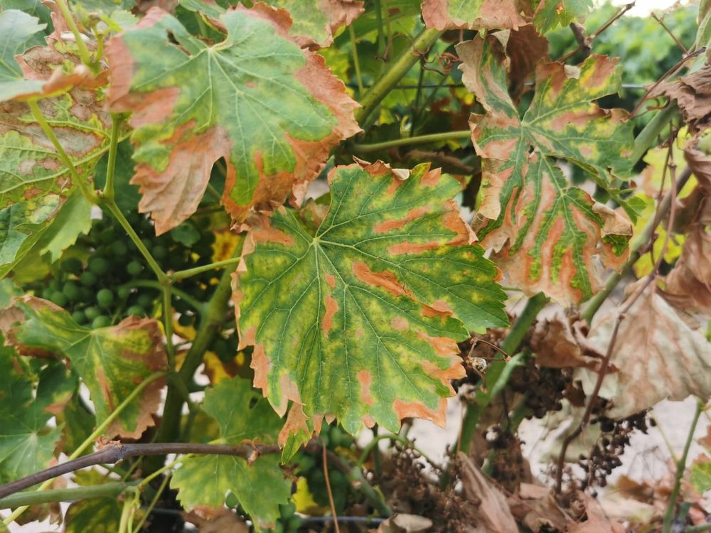
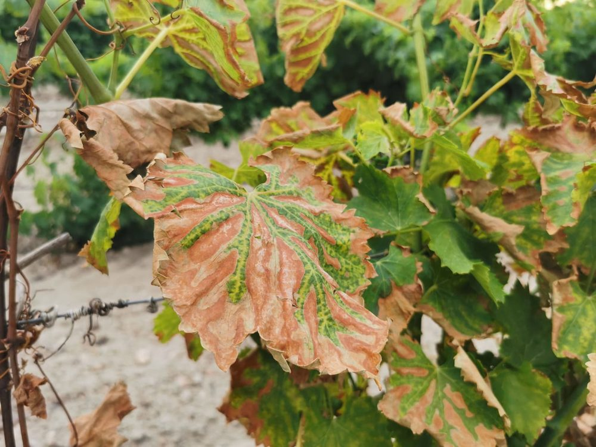

¿Qué enfermedad es?
Oídio, yesca… otras amenazas del viñedo que también se aprenden a reconocer.
El problema
El mildiu no es la única amenaza. El oídio, causado por el hongo Erysiphe necator, cubre de un polvo blanquecino hojas y racimos; es un parásito que solo crece sobre la planta viva (Gadoury et al., 2012). Y la yesca (esca, en inglés) es una enfermedad de la madera, asociada a varios hongos, entre ellos Fomitiporia mediterranea, Phaeomoniella chlamydospora y Phaeoacremonium minimum (Del Frari et al., 2021).
La yesca ataca la cepa por dentro, pero a menudo se delata en las hojas, que se llenan de manchas entre los nervios con un aspecto «atigrado» (en inglés, tiger stripes) (Mugnai et al., 1999; Del Frari et al., 2021).
Lo que dice la investigación
La base del reto del mildiu, una red neuronal que marca sobre la imagen las zonas con síntomas, se describe en Hernández et al. (2025). La idea es extender este tipo de herramientas a otras enfermedades, aunque cada una tiene síntomas distintos que la IA debe aprender por separado, y algunas se confunden fácilmente con otras.




Así será el juego
Te enseñaremos una hoja o una cepa y tendrás que decir qué le pasa: oídio, mildiu, yesca u otra cosa.
Para saber más
- Gadoury, D. M., Cadle-Davidson, L., Wilcox, W. F., Dry, I. B., Seem, R. C. y Milgroom, M. G. (2012). Grapevine powdery mildew (Erysiphe necator): a fascinating system for the study of the biology, ecology and epidemiology of an obligate biotroph. Molecular Plant Pathology, 13(1), 1–16. doi:10.1111/j.1364-3703.2011.00728.x
- Del Frari, G., Oliveira, H. y Boavida Ferreira, R. (2021). White rot fungi (Hymenochaetales) and esca of grapevine: insights from recent microbiome studies. Journal of Fungi, 7(9), 770. doi:10.3390/jof7090770
- Mugnai, L., Graniti, A. y Surico, G. (1999). Esca (black measles) and brown wood-streaking: two old and elusive diseases of grapevines. Plant Disease, 83(5), 404–418. doi:10.1094/PDIS.1999.83.5.404
- Hernández, I., Silva, R., Melo-Pinto, P., Gutiérrez, S. y Tardaguila, J. (2025). Early detection of downy mildew in vineyards using deep neural networks for semantic segmentation. Biosystems Engineering, 252, 15–31. doi:10.1016/j.biosystemseng.2025.02.007